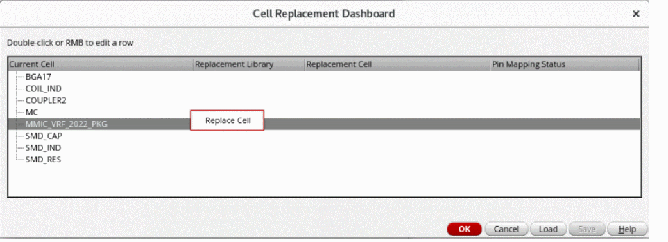
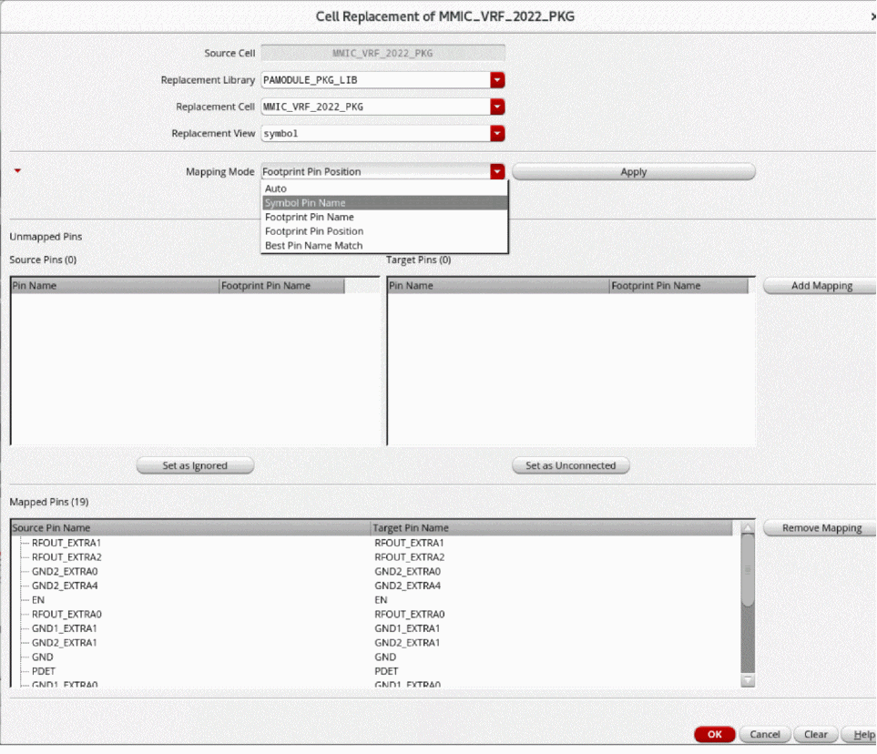
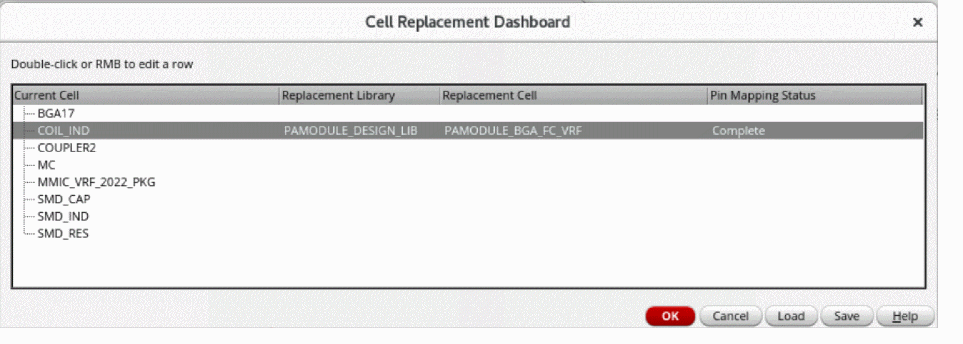

Cell Replacement
In the enablement flow, the die or package abstract views from the Allegro design must be replaced by the Edit-in-Concert abstract generated by the die or package export. This replacement can become manual and error-prone. Therefore, the cell replacement functionality has been integrated in the Virtuoso Multi Technology Enablement form as an optional step. It provides the capability to ease the replacement of cells having pin mismatches. For example:
- By replacing die or package abstracts by Edit-in-Concert abstracts.
- By replacing of SMD and other cells by corporate libraries generated by csvImport.
The cell replacement interface provides a global view of the replacements. It is imperative to maintain the connectivity of the replaced instances. While handling pin mismatches between the source and target abstracts, you can manually resolve the conflicts.
-
Select the check box in the Cell Replacement section of the Virtuoso Multi Technology Enablement form.
The Cell Replacement Dashboard form appears after schematic generation. By default, no replacement is triggered and the dashboard lists only the design cells. -
Double-click or right-click a row to replace the cell.
The Replacement Cell form opens. -
Specify the replacement abstract symbol. The Unmapped Pins section gets filled automatically.
 -
Select the required option from the Mapping Mode drop-down list and click Apply.
The Mapped Pins section gets filled automatically. - [Optional] Select a source pin and a target pin to map them manually by clicking Add Mapping.
- [Optional] Click Set as Ignored for unmapped source pins. Similarly, click Set as Unconnected for unmapped target pins.
-
Click OK. The Cell Replacement Dashboard shows the Pin Mapping Status as
Complete.
 - Click OK to continue with the Enablement flow.
- [Optional] Click Load to read a mapping file for restoring the mapping between the cells and pins. However, reanalyze the status because the information in the file might be outdated.
- [Optional] Click Save to save the current mapping. The button is enabled only if at least one cell replacement has been done.
Related Topics
Cell Replacement Dashboard Form
Virtuoso Multi Technology Enablement Form
Initial SiP File to Virtuoso RF Solution Database
Return to top